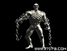

MONSTER / mob-45

尸王
所属区域：矿区
怪物介绍
尸王是僵尸之王，生活在死矿中。它能在死尸中注入奇怪的气体使他们成为僵尸。原先他拥有强大的魔力，但都消耗在制造僵尸，现在他正试图找回这种力量。如果人们经过死矿，它会用任意支配的能力和缠绕在身体上的铁链杀死他们。 尸王 生命：750 经验值：1500 所爆物品： 所有书籍
属性资料
| 生命 | 750 |
|---|---|
| 经验值 | 1500 |
| 所爆物品 | 所有书籍 |

所属区域：矿区
尸王是僵尸之王，生活在死矿中。它能在死尸中注入奇怪的气体使他们成为僵尸。原先他拥有强大的魔力，但都消耗在制造僵尸，现在他正试图找回这种力量。如果人们经过死矿，它会用任意支配的能力和缠绕在身体上的铁链杀死他们。 尸王 生命：750 经验值：1500 所爆物品： 所有书籍
| 生命 | 750 |
|---|---|
| 经验值 | 1500 |
| 所爆物品 | 所有书籍 |